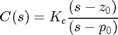
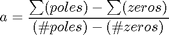
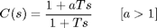
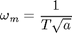
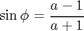
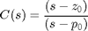
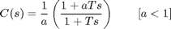
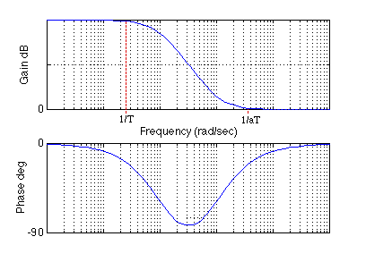

Extras: Designing Lead and Lag Compensators
Contents
Lead and lag compensators are used quite extensively in control. A lead compensator can increase the stability or speed of reponse of a system; a lag compensator can reduce (but not eliminate) the steady-state error. Depending on the effect desired, one or more lead and lag compensators may be used in various combinations.
Lead, lag, and lead/lag compensators are usually designed for a system in transfer function form. The conversions page explains how to convert a state-space model into transfer function form.
Lead or phase-lead compensator using root locus
A first-order lead compensator C(s) can be designed using the root locus. A lead compensator in root locus form is given by
(1)
where the magnitude of z0 is less than the magnitude of p0. A phase-lead compensator tends to shift the root locus toward to the left in the complex s-plane. This results in an improvement in the system's stability and an increase in its response speed.
How is this accomplished? If you recall finding the asymptotes of the root locus that lead to the zeros at infinity, the equation to determine the intersection of the asymptotes along the real axis is the following.
(2)
When a lead compensator is added to a system, the value of this intersection will be a larger negative number than it was before. The net number of zeros and poles will be same (one zero and one pole are added), but the added pole is a larger negative number than the added zero. Thus, the result of a lead compensator is that the asymptotes' intersection is moved further to the left in the complex plane, and the entire root locus is shifted to the left as well. This tends to increase the region of stability and the system's response speed.
In MATLAB a phase-lead compensator in root locus form is implemented using the following commands (where Kc, z, and p are defined).
s = tf('s');
C_lead = Kc*(s-z)/(s-p);
We can interconnect this compensator C(s) with a plant P(s) using the following code.
sys_ol = C_lead*P;
Lead or phase-lead compensator using frequency response
A first-order phase-lead compensator can also be designed using a frequency reponse approach. A lead compensator in frequency response form is given by the following.
(3)
Note that this is equivalent to the root locus form repeated below
(4)
with p =1 / T, z = 1 / aT, and Kc = a. In frequency response design, the phase-lead compensator adds positive phase to the system over the frequency range 1 / aT to 1 / T. A Bode plot of a phase-lead compensator C(s) has the following form.

The two corner frequencies are at 1 / aT and 1 / T; note the positive phase that is added to the system between these two frequencies. Depending on the value of a, the maximum added phase can be up to 90 degrees; if you need more than 90 degrees of phase, two lead compensators in series can be employed. The maximum amount of phase is added at the center frequency, which is calculated according to the following equation.
(5)
The equation which determines the maximum phase is given below.
(6)
Additional positive phase increases the phase margin and thus increases the stability of the system. This type of compensator is designed by determining a from the amount of phase needed to satisfy the phase margin requirements, and determing T to place the added phase at the new gain-crossover frequency.
Another effect of the lead compensator can be seen in the magnitude plot. The lead compensator increases the gain of the system at high frequencies (the amount of this gain is equal to a). This can increase the crossover frequency, which will help to decrease the rise time and settling time of the system (but may amplify high frequency noise).
In MATLAB, a phase-lead compensator C(s) in frequency response form is implemented using the following code (where a and T are defined).
s = tf('s');
C_lead = (1+a*T*s)/(1+T*s);
We can then interconnect it with a plant P(s) using the following code.
sys_ol = C_lead*P;
Lag or phase-lag compensator using root locus
A first-order lag compensator C(s) can be designed using the root locus. A lag compensator in root locus form is given by the following.
(7)
This has a similar form to a lead compensator, except now the magnitude of z0 is greater than the magnitude of p0 (and the additional gain Kc is omitted). A phase-lag compensator tends to shift the root locus to the right in the complex s-plane, which is undesirable. For this reason, the pole and zero of a lag compensator are often placed close together (usually near the origin) so that they do not appreciably change the transient response or stability characteristics of the system.
How does the lag controller shift the root locus to the right? Below is repeated the equation for finding where the asymptotes of the root locus intersect along the real axis.
(8)
When a lag compensator is added to a system, the value of this intersection will be a smaller negative number than it was before. The net number of zeros and poles will be the same (one zero and one pole are added), but the added pole is a smaller negative number than the added zero. Thus, the result of a lag compensator is that the asymptotes' intersection is moved to the right in the complex plane, and the entire root locus is shifted to the right as well.
It was previously stated that a lag compensator is often designed to minimally change the transient response of system because it generally has a negative effect. If the phase-lag compensator is not supposed to change the transient response noticeably, what is it good for then? The answer is that a phase-lag compensator can improve the system's steady-state response. It works in the following manner. At high frequencies, the lag compensator will have unity gain. At low frequencies, the gain will be z0 / p0 which is greater than 1. This z0 / p0 factor will multiply the position, velocity, or acceleration constant (Kp, Kv, or Ka), and the steady-state error will thus decrease by the same factor.
In MATLAB, a phase-lag compensator C(s) in root locus form is implemented by employing the following code where it is again assumed that z and p are previously defined.
s = tf('s');
C_lag = (s-z)/(s-p);
We can also interconnect the compensator with a plant P(s) as follows.
sys_ol = C_lag*P;
Lag or phase-lag compensator using frequency response
A first-order phase-lag compensator also can be designed using a frequency response approach. A lag compensator in frequency response form is given by the following.
(9)
The phase-lag compensator looks similar to phase-lead compensator, except that a is now less than 1. The main difference is that the lag compensator adds negative phase to the system over the specified frequency range, while a lead compensator adds positive phase over the specified frequency. A Bode plot of a phase-lag compensator has the following form.

The two corner frequencies are at 1 / T and 1 / aT. The main effect of the lag compensator is shown in the magnitude plot. The lag compensator adds gain at low frequencies; the magnitude of this gain is equal to a. The effect of this gain is to cause the steady-state error of the closed-loop system to be decreased by a factor of a. Because the gain of the lag compensator is unity at middle and high frequencies, the transient response and stability are generally not impacted much.
The side effect of the lag compensator is the negative phase that is added to the system between the two corner frequencies. Depending on the value a, up to -90 degrees of phase can be added. Care must be taken that the phase margin of the system with lag compensation is still satisfactory. This is generally achieved by placing the frequency of maximum phase lag, wm as calculated below, well below the new gain crossover frequency.
(10)
In MATLAB, a phase-lag compensator C(s) in frequency response form is implemented using the following code, again assuming that a and T are defined.
s = tf('s');
C_lag = (a*T*s+1)/(a*(T*s+1));
We can again interconnect the compensator with a plant P(s) as follows.
sys_ol = C_lag*P;
Lead-lag compensator using either root locus or frequency response
A lead-lag compensator combines the effects of a lead compensator with those of a lag compensator. The result is a system with improved transient response, stability, and steady-state error. To implement a lead-lag compensator, first design the lead compensator to achieve the desired transient response and stability, and then design a lag compensator to improve the steady-state response of the lead-compensated system.